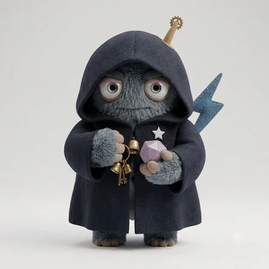
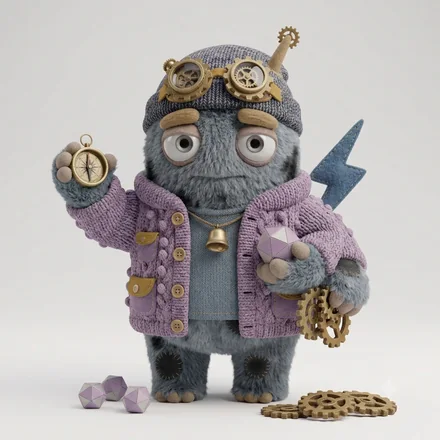
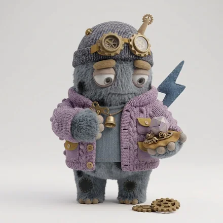

monster type
ISTP-A-C
孤高の手さばきモンスター
手を動かしながら、原理をつかむ人
あなたという人
説明より実物、議論より試作。触って動かすことで理解を深めます。無駄を嫌い、必要なことだけを最短距離でやります。感情の言語化は不得手ですが、いざというとき最も冷静です。
必要なことだけを、誰にも相談せずに片づけるタイプ。判断に迷いがなく、人にも簡単には頼らないので、ひとりで完結する速度が際立ちます。トラブルの切り札になりますが、何をどう直したのかは、本人以外に誰も知りません。
4つのサブタイプの中での位置
 ISTP-A-H人懐こい手さばきモンスターISTP-A-C孤高の手さばきモンスター
ISTP-A-H人懐こい手さばきモンスターISTP-A-C孤高の手さばきモンスター
ISTP-O-H確かめる手さばきモンスター
ISTP-O-C寡黙な手さばきモンスター同じ基本タイプでも、自分への確信（A / O）と人への構え（H / C）で現れ方が変わります。
強みと、気をつけたいところ
ここは基本タイプ（ISTP）に共通する性質です。
強み
- トラブル対応が速く、実地に強い
- 道具や仕組みを自分で最適化できる
- 緊急時にも動じない
気をつけたいところ
- 長期の計画や報告を面倒に感じる
- 気持ちの共有を求められると距離を取る
- 興味を失うと、途端に手が止まる
ISTP-A-C ならでは
このタイプの強み
誰も手を出せない状況で、ひとりだけ冷静に手が動く。壊れた場面でいちばん頼りになります。
落とし穴
共有がないので、同じ問題が別の場所で繰り返される。直したあとに一言だけ経緯を残すと、影響範囲が一気に広がります。
仕事での適性
力を発揮する環境
実物と裁量があり、手順に縛られすぎない環境
向いている役割
実装、修理・改善、現場対応、専門技能
トラブル対応の切り札。共有の一手間で影響範囲が広がる。
相性
かみ合う相手
見ている世界が補い合う組み合わせ。人への構えが同じなので距離の取り方で揉めにくく、自分への確信が違うぶん、迷いのなさと慎重さを互いに預けられます。
安心できる相手


テンポも間合いも近く、説明のいらない関係になりやすい相手。長く一緒にいても疲れにくい組み合わせです。
刺激をくれる相手
価値観の置き所が違うため摩擦は起きますが、自分に足りない視点を最も速く手渡してくれる相手です。
相手のコードがわかれば、2人の相性をこの場で見られます。
この人との相性を調べるこの診断は、回答時点での自己認識を6つの軸で整理したものです。人の性格は状況や時期によって変わります。
© 2026 WONDER BROTHERS INC. All rights reserved.